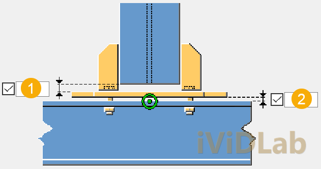
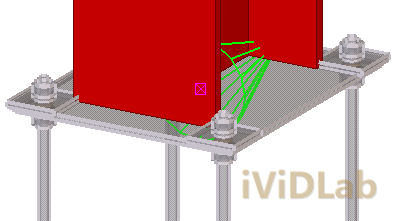
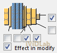

Thiết kế chi tiết liên kết chân cột (base plate design) là một trong những bước tối quan trọng trong quy trình Detailer kết cấu thép. Liên kết này truyền toàn bộ tải trọng từ hệ khung siêu tĩnh phía trên xuống móng bê tông cốt thép. Việc lựa chọn cấu kiện chân cột phù hợp trong Tekla Structures không chỉ ảnh hưởng trực tiếp đến tốc độ mô hình hóa (modeling speed) mà còn quyết định sự chính xác khi chế tạo tại xưởng và lắp ghép ngoài công trường.
Bài viết này của iViDLab Team, dựa trên tài liệu chuẩn hóa TS_COMP_2025_en_System components.pdf (Trang 41 - 100), sẽ giúp bạn so sánh chi tiết 3 giải pháp chân cột phổ biến nhất: Simple base plate (55), U.S. Base plate (71) và Base plate (1004).
1. Tổng quan & Bản đồ 3 loại chân cột phổ biến
Mỗi cấu kiện chân cột tiêu chuẩn trong Tekla được lập trình để giải quyết một trường hợp chịu lực cụ thể của chân cột kết cấu thép:
Dưới đây là bảng so sánh trực quan các tính năng cốt lõi giúp kỹ sư detailer đưa ra lựa chọn chính xác:
| Tiêu chí so sánh | Simple Base Plate (55) | U.S. Base Plate (71) | Base Plate (1004) |
|---|---|---|---|
| Hồ sơ cột áp dụng | Hồ sơ chữ I đối xứng, thép hộp (RHS) | Hồ sơ chữ I, cột hộp rỗng chữ nhật/tròn | Bất kỳ loại tiết diện nào (I, HSS, Built-up...) |
| Liên kết sườn gia cường | Cơ bản (Sườn phẳng ở bụng hoặc cánh) | Chuyên nghiệp (Sườn xiên góc, sườn chữ U) | Đầy đủ mọi tùy chọn nâng cao |
| Tạo bu lông neo (Anchor Rods) | Không tạo bu lông neo tự động | Có tạo bu lông neo, bản đệm neo phụ | Sinh bu lông neo nâng cao, đai ốc, long đền đệm |
| Vát cạnh & Tùy biến tấm | Đơn giản, vát 4 góc thẳng | Vát xiên và cắt uốn tấm cạnh phức tạp | Hoàn toàn tự do vát cạnh và tạo góc bo |
2. Quy trình thao tác click chuột dựng chân cột (Selection Order)
Để chân cột được sinh ra chính xác và định hướng bu lông đúng góc thiết kế, detailer cần tuân thủ thứ tự click chuột tiêu chuẩn dưới đây:
2. Click chọn 1 điểm trên trục hoặc điểm chân cột móng hình học
3. Cấu kiện chân cột và bu lông sẽ tự động được sinh ra căn đều theo trọng tâm tiết diện cột.
3. Đi sâu vào chi tiết thiết lập các cấu kiện
3.1. Simple base plate (55) - Sự tinh giản tối đa
Đúng như tên gọi của nó, cấu kiện 55 dùng cho các liên kết chân khớp đơn giản, chân cột phụ chịu lực dọc nhỏ và không có lực nhổ uốn ngược.

Cài đặt cốt lõi trên Tab Picture:
- (1) Thickness / Width / Height: Chiều dày, chiều rộng và chiều cao của bản đế chính.
- (2) Horizontal/Vertical offset: Độ dịch chuyển bản đế so với tâm cột hình học.
- **Ưu điểm:** Cực kỳ gọn nhẹ, dựng hình nhanh, chiếm ít tài nguyên hệ thống khi dựng các nhà công nghiệp có hàng trăm chân cột phụ.
3.2. U.S. Base plate (71) - Tiêu chuẩn cơ điện lực và giằng góc xiên
Cấu kiện 71 được kế thừa từ tiêu chuẩn detailer của Mỹ, nổi tiếng với hệ sườn sấn xiên và thép góc gối chịu lực cắt.
- Sườn xiên gối (Beam stiffeners): Hỗ trợ hàn trực tiếp sườn chéo vào bản đế và bụng cột để chống uốn nách cột do lực ngang lớn.
- Bản đệm hàn (Shim plates): Hỗ trợ thiết lập khe hở vữa rót không co ngót (grout thickness) và chèn thêm các bản thép mỏng chống sụt lún khi siết đai ốc.
3.3. Base plate (1004) - Tiêu chuẩn vàng của hệ thống
Đối với chân cột chịu lực lớn trong khung Zamil hoặc chân cột khung cổng siêu tĩnh chịu mô-men uốn cao, **Base plate (1004)** chính là sự lựa chọn tối cao nhờ tính năng tạo bu lông neo và sườn sấn hoàn hảo nhất.

Cấu hình Tab Anchor Rods nâng cao:

- Anchor rod profile: Chọn đường kính thanh ren chịu lực kéo lớn (ví dụ: `M24`, `M30`).
- Grout thickness: Khoảng hở đổ vữa lót tự chảy cường độ cao (thông thường từ 30mm - 50mm).
- Anchor plate & Washer plates: Tạo bản đệm vuông/tròn ở chân bu lông để neo giữ cứng trong bê tông đài móng móng.
4. Hướng dẫn & mẹo thực tế cho Detailer (Tips & Tricks)
- Xử lý lực cắt ngang cực lớn (Shear Key/Shear Lug): Khi lực cắt dưới chân cột vượt quá khả năng chịu cắt của bu lông neo, tuyệt đối không được tăng số lượng bu lông một cách vô lý. Hãy sử dụng tùy chọn **Shear Key** trên tab *Parameters* của cấu kiện 1004 để tạo một đoạn thép hình chữ I hoặc thép hộp hàn dưới đáy bản mã cắm sâu vào bê tông để chịu lực cắt an toàn.
- Lỗ thoát khí vữa rót (Grout Hole): Với bản đế có kích thước lớn hơn 500x500mm, khi đổ vữa lót móng rất dễ bị bọt khí bên trong dẫn đến rỗng móng chân cột. Hãy thiết lập tạo ít nhất 1 lỗ tròn đường kính D50 ở tâm bản bụng cột trên tab *Parameters* để làm lỗ thoát khí và rót vữa thông suốt.
- Dung sai lắp dựng ngoài công trường (Tolerance): Đường kính lỗ luồn bu lông neo trên bản đế nên được thiết lập rộng hơn đường kính bu lông ít nhất 6mm - 10mm (ví dụ bu lông M24 thì lỗ bản đế D30 - D34) kèm theo một **Washer plate** dày bắt phía trên để đảm bảo việc căn chỉnh định vị chân cột dễ dàng khi lắp dựng thực tế ngoài công trường có sai số định vị.
Hi vọng bài so sánh chuyên sâu chân cột từ iViDLab Team sẽ giúp bạn tự tin chọn cấu kiện chính xác cho mọi dự án thép nhà công nghiệp và khung kèo lớn trong tương lai!
Detailing base plate connections is one of the most critical steps in structural steel detailing. This joint transfers all loads from the upper super-structures down to the concrete foundation. Selecting the right base plate component in Tekla Structures directly affects not only your modeling speed but also workshop fabrication accuracy and site erection efficiency.
This comprehensive comparison guide by the iViDLab Team, based on the standardized TS_COMP_2025_en_System components.pdf manual (Pages 41 - 100), will deep dive into the three most popular base plate joints: Simple base plate (55), U.S. Base plate (71), and Base plate (1004).
1. Overview & Comparison of the 3 Standard Joints
Each standard base plate component in Tekla is programmed to resolve specific structural force transfer cases:
The comparative technical matrix below outlines the core functionalities to help detailers make the right choice:
| Feature / Criterion | Simple Base Plate (55) | U.S. Base Plate (71) | Base Plate (1004) |
|---|---|---|---|
| Compatible Column Profile | Symmetric I-beam, hollow box section (RHS) | I-beam, hollow round/rectangular column | Any profile types (I, HSS, Built-up...) |
| Stiffener Configurations | Basic (Flat plates at web or flanges) | Professional (Skewed gussets, U-stiffeners) | Highly customizable advanced options |
| Anchor Rods Generation | No automated anchor rod generation | Supported with extra anchor plate detailing | Advanced anchor rod, washers & nut assemblies |
| Plate Chamfers & Cuts | Simple straight 4-corner chamfering | Skewed skewing and complex plate profiles | Fully customized chamfers and edge curves |
2. Pick Sequence & Selection Order
To position the base plate and orientate the anchor rods correctly along your workplane, strictly follow this standard picking sequence:
2. Click a point along the column profile axis or foundation geometric center
3. The base plate and anchor assemblies automatically generate centered on the column profile gravity center.
3. Detailing and Deep-Dive Parameter Settings
3.1. Simple base plate (55) - Ultimate Simplicity
Component 55 is designed specifically for simple pinned joints, secondary posts, and columns subjected to low axial load with zero tension uplift.
Core parameters on the Picture Tab:
- (1) Thickness / Width / Height: Geometry settings for the primary base plate.
- (2) Horizontal/Vertical offset: Shifting the plate center away from the column center.
- **Advantage:** Fast modeling, low memory footprint when generating industrial structures with hundreds of secondary wind columns.
3.2. U.S. Base plate (71) - Rigid Joint and Skewed Gusset Configurations
Component 71 is derived from classic US structural detailing standards, highly regarded for its angled skewed stiffeners and shear keys.
- Beam stiffeners: Diagonal stiffening plates welded to base plates and column webs to resist heavy wind and crane bending moments.
- Shim plates: Defines concrete grout thickness clearance and adds extra shim plate packs to prevent buckling during anchor bolt tightening.
3.3. Base plate (1004) - The Industry Gold Standard
For heavy moments joints in portal frame Zamil buildings and ultra-stiff portal frames, **Base plate (1004)** represents the standard choice thanks to its highly customizable anchor rods and stiffeners tab.
Advanced Anchor Rod Detailing:
- Anchor rod profile: Select your thread rod diameters (e.g. `M24`, `M30`).
- Grout thickness: Clearance space for high-strength non-shrink grout pours (typically 30mm - 50mm).
- Anchor plate & Washer plates: Custom square or circular plates buried in concrete pad foundation to anchor the structural columns firmly.
4. Expert Detailing Erection Advice (Tips & Tricks)
- Handling Huge Shear Forces (Shear Key/Shear Lug): When horizontal base shear exceeds anchor bolt capacity, do not keep adding anchor bolts blindly. Use the **Shear Key** parameter on the *Parameters* tab of Base Plate 1004 to create an H-beam or box section lug welded underneath the base plate to transfer shear directly into concrete.
- Grout Air Release Holes (Grout Hole): For base plates wider than 500x500mm, pouring fluid grout can trap pockets of air, creating structural voids underneath the column. Set at least one D50 circular air hole at the column web center via the *Parameters* tab to ensure a complete, smooth grout pour.
- Site Erection Tolerances (Tolerance): Base plate hole diameters for anchor rods should be at least 6mm - 10mm larger than the rod diameter (e.g., M24 rod should have a D30 - D34 hole) combined with heavy **Washer plates** placed on top to absorb site setting-out discrepancies.
We hope this technical deep dive by the **iViDLab Team** empowers you to select base plate components confidently for your future large-span portal frames and industrial Zamil structures!